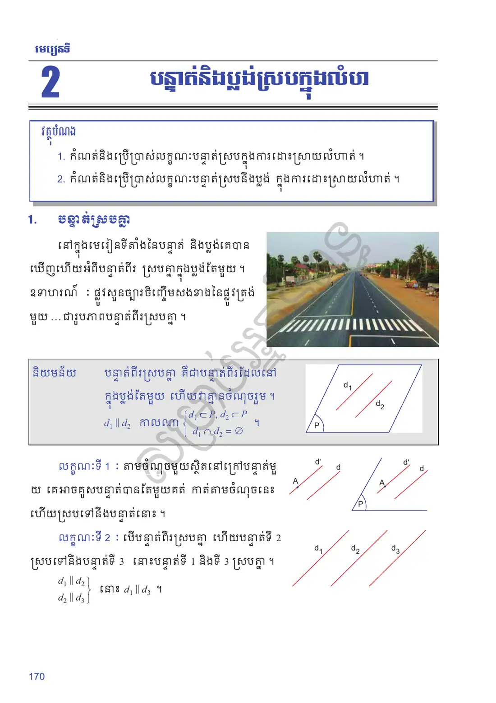
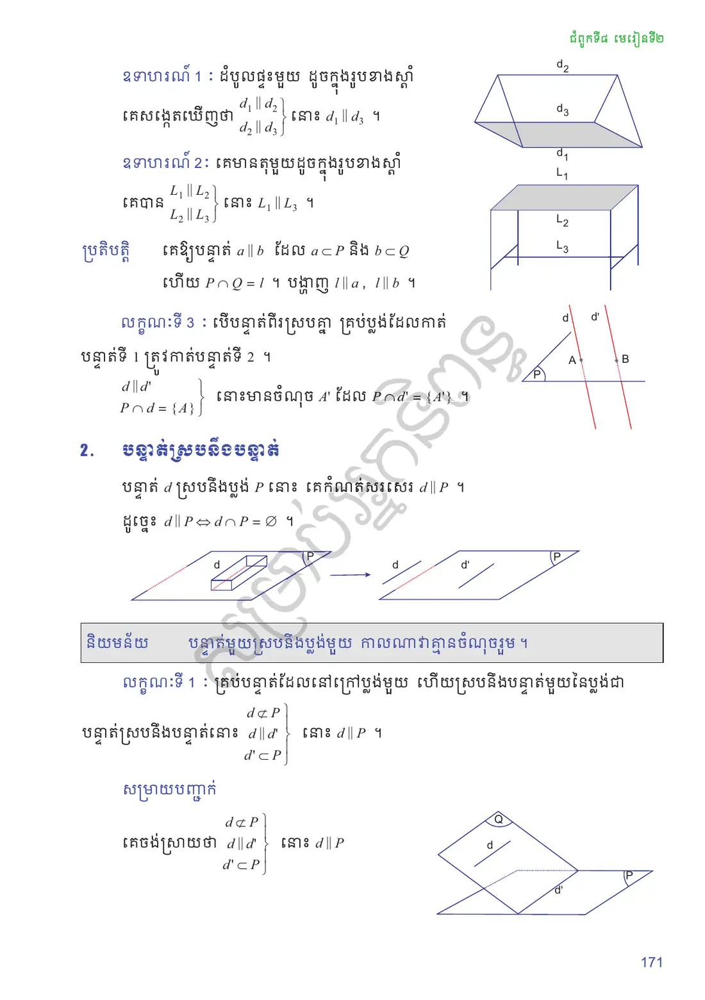
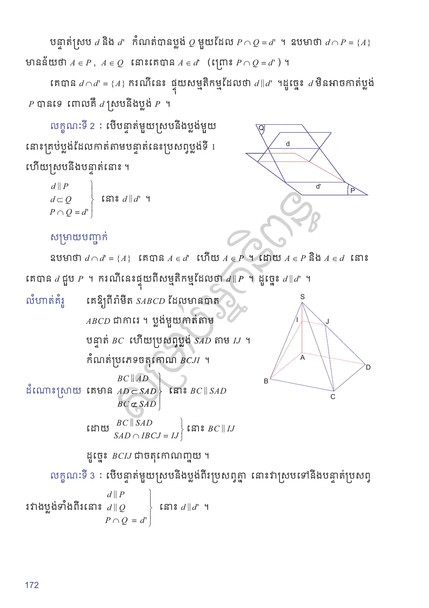
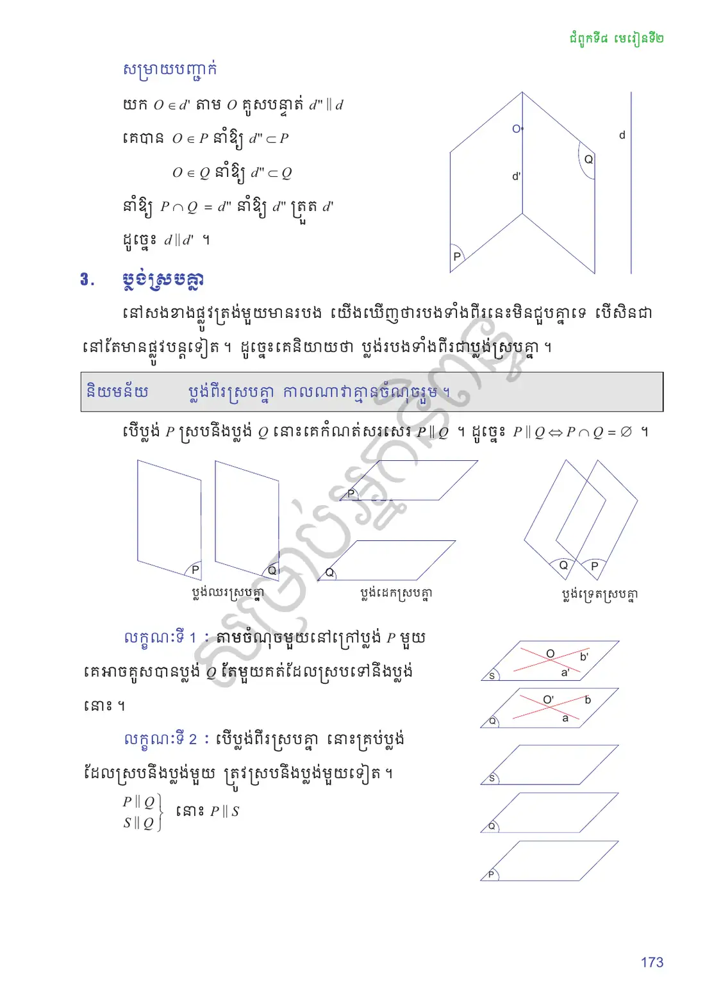
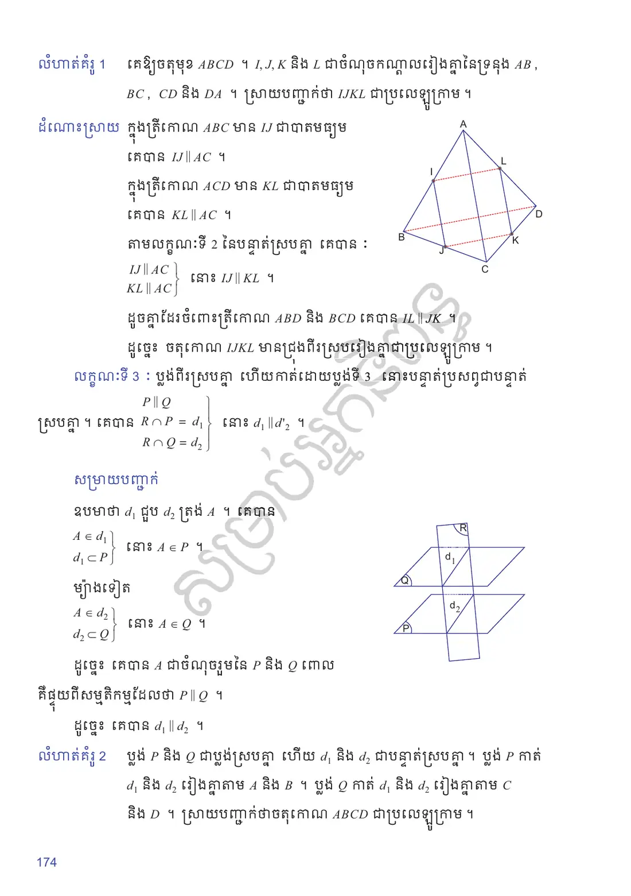
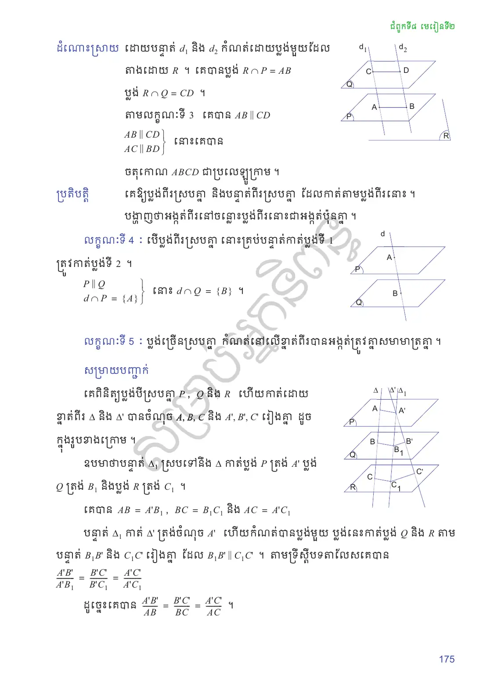
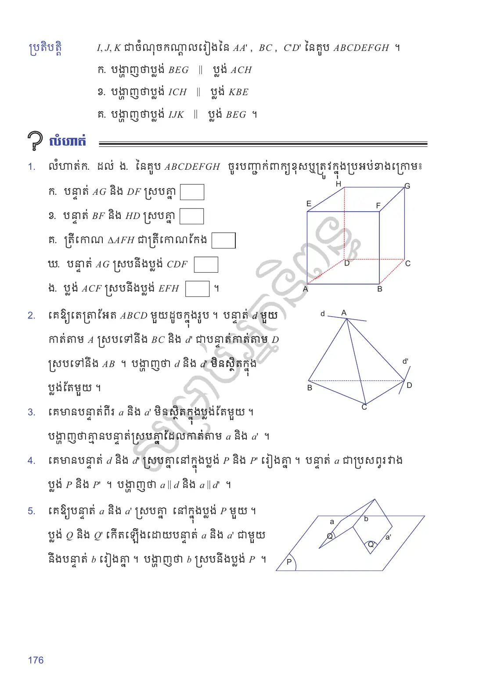
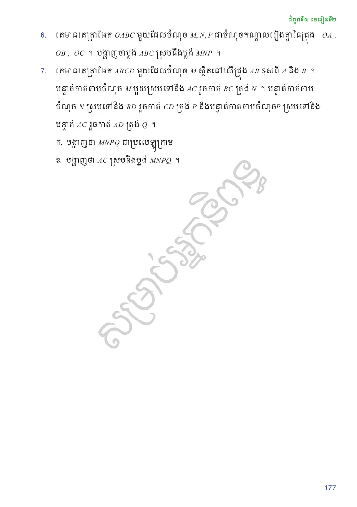

កំណត់និងប្រើប្រាស់លក្ខណៈបន្ទាត់ស្របក្នុងការដោះស្រាយលំហាត់ ។
កំណត់និងប្រើប្រាស់លក្ខណៈបន្ទាត់ស្របនឹងប្លង់ ក្នុងការដោះស្រាយលំហាត់ ។
បន្ទាត់ស្របគ្នា
នៅក្នុងមេរៀនទីតាំងនៃបន្ទាត់ និងប្លង់គេបានឃើញហើយអំពីបន្ទាត់ពីរ ស្របគ្នាក្នុងប្លង់តែមួយ ។ ឧទាហរណ៍ ៖ ផ្លូវសួនច្បារចិញ្ចើមសងខាងនៃផ្លូវត្រង់មួយ \(\dots\) ជារូបភាពបន្ទាត់ពីរស្របគ្នា ។
បន្ទាត់ពីរស្របគ្នា គឺជាបន្ទាត់ពីរដែលនៅក្នុងប្លង់តែមួយ ហើយវាគ្មានចំណុចរួម ។
តាមចំណុចមួយស្ថិតនៅក្រៅបន្ទាត់មួយ គេអាចគូសបន្ទាត់បានតែមួយគត់ កាត់តាមចំណុចនេះ ហើយស្របទៅនឹងបន្ទាត់នោះ ។
បើបន្ទាត់ពីរស្របគ្នា ហើយបន្ទាត់ទី \(2\) ស្របទៅនឹងបន្ទាត់ទី \(3\) នោះបន្ទាត់ទី \(1\) និងទី \(3\) ស្របគ្នា ៖
ដំបូលផ្ទះមួយ ៖ គេសង្កេតឃើញថា \(d_1 \parallel d_2\) និង \(d_2 \parallel d_3\) នោះ \(d_1 \parallel d_3\) ។
គេមានតុមួយ ៖ គេបាន \(L_1 \parallel L_2\) និង \(L_2 \parallel L_3\) នោះ \(L_1 \parallel L_3\) ។
គេឱ្យបន្ទាត់ \(a \parallel b\) ដែល \(a \subset P\) និង \(b \subset Q\) ហើយ \(P \cap Q = l\) ។ បង្ហាញ \(l \parallel a\), \(l \parallel b\) ។
មើលចម្លើយ
បើ \(a\) ស្ថិតក្នុង \(Q\) ផង នោះ \(a = l\) ។ ករណីផ្សេង ៖ \(a \parallel b\) និង \(b \subset Q\) នោះ \(a \parallel Q\) ។ ដោយ \(a \subset P\) និង \(P \cap Q = l\) នោះ \(l \parallel a\) (លក្ខណៈទី ២ នៃបន្ទាត់ស្របនឹងប្លង់) ។ តាមលក្ខណៈទី ២ ខាងលើ \(l \parallel a\) និង \(a \parallel b\) នាំឱ្យ \(l \parallel b\) ។
បើបន្ទាត់ពីរស្របគ្នា គ្រប់ប្លង់ដែលកាត់បន្ទាត់ទី \(1\) ត្រូវកាត់បន្ទាត់ទី \(2\) ៖
បន្ទាត់ស្របនឹងប្លង់
បន្ទាត់ \(d\) ស្របនឹងប្លង់ \(P\) នោះ គេកំណត់សរសេរ \(d \parallel P\) ។ ដូច្នេះ \(d \parallel P \Leftrightarrow d \cap P = \varnothing\) ។
បន្ទាត់មួយស្របនឹងប្លង់មួយ កាលណាវាគ្មានចំណុចរួម ។
គ្រប់បន្ទាត់ដែលនៅក្រៅប្លង់មួយ ហើយស្របនឹងបន្ទាត់មួយនៃប្លង់ជាបន្ទាត់ស្របនឹងប្លង់នោះ ៖
សម្រាយបញ្ជាក់ ៖ បន្ទាត់ស្រប \(d\) និង \(d'\) កំណត់បានប្លង់ \(Q\) មួយដែល \(P \cap Q = d'\) ។ ឧបមាថា \(d \cap P = \{A\}\) មានន័យថា \(A \in P\), \(A \in Q\) នោះគេបាន \(A \in d'\) (ព្រោះ \(P \cap Q = d'\)) ។ គេបាន \(d \cap d' = \{A\}\) ករណីនេះ ផ្ទុយសម្មតិកម្មដែលថា \(d \parallel d'\) ។ ដូច្នេះ \(d\) មិនអាចកាត់ប្លង់ \(P\) បានទេ ពោលគឺ \(d\) ស្របនឹងប្លង់ \(P\) ។
បើបន្ទាត់មួយស្របនឹងប្លង់មួយ នោះគ្រប់ប្លង់ដែលកាត់តាមបន្ទាត់នេះប្រសព្វប្លង់ទី \(1\) ហើយស្របនឹងបន្ទាត់នោះ ៖
សម្រាយបញ្ជាក់ ៖ ឧបមាថា \(d \cap d' = \{A\}\) គេបាន \(A \in d'\) ហើយ \(A \in P\) ។ ដោយ \(A \in P\) និង \(A \in d\) នោះគេបាន \(d\) ជួប \(P\) ។ ករណីនេះផ្ទុយពីសម្មតិកម្មដែលថា \(d \parallel P\) ។ ដូច្នេះ \(d \parallel d'\) (\(d\) និង \(d'\) ស្ថិតក្នុងប្លង់ \(Q\) តែមួយ) ។
គេឱ្យពីរ៉ាមីត \(SABCD\) ដែលមានបាត \(ABCD\) ជាការេ ។ ប្លង់មួយកាត់តាមបន្ទាត់ \(BC\) ហើយប្រសព្វប្លង់ \(SAD\) តាម \(IJ\) ។ កំណត់ប្រភេទចតុកោណ \(BCJI\) ។
គេមាន
![](data:image/svg+xml;charset=utf-8,%3C%3Fxml version=%221.0%22 encoding=%22UTF-8%22%3F%3E%3Csvg xmlns=%22http://www.w3.org/2000/svg%22 xmlns:xlink=%22http://www.w3.org/1999/xlink%22 width=%22151.89%22 height=%22162.53%22 viewBox=%220 0 151.89 162.53%22%3E%3Cdefs%3E%3Cg%3E%3Cg id=%22glyph-0-0%22%3E%3Cpath d=%22M 1.78 -1.14 C 1.37 -0.48 1 -0.34 0.56 -0.31 C 0.43 -0.29 0.34 -0.29 0.34 -0.10 C 0.34 -0.04 0.39 0 0.48 0 C 0.75 0 1.04 -0.03 1.32 -0.03 C 1.65 -0.03 2 0 2.32 0 C 2.39 0 2.51 0 2.51 -0.18 C 2.51 -0.29 2.42 -0.31 2.35 -0.31 C 2.12 -0.32 1.89 -0.40 1.89 -0.65 C 1.89 -0.78 1.95 -0.89 2.03 -1.03 L 2.78 -2.29 L 5.28 -2.29 C 5.29 -2.09 5.43 -0.73 5.43 -0.64 C 5.43 -0.34 4.92 -0.31 4.71 -0.31 C 4.57 -0.31 4.48 -0.31 4.48 -0.10 C 4.48 0 4.59 0 4.62 0 C 5.03 0 5.45 -0.03 5.85 -0.03 C 6.10 -0.03 6.73 0 6.98 0 C 7.04 0 7.17 0 7.17 -0.20 C 7.17 -0.31 7.06 -0.31 6.93 -0.31 C 6.31 -0.31 6.31 -0.37 6.29 -0.67 L 5.68 -6.87 C 5.67 -7.07 5.67 -7.10 5.5 -7.10 C 5.34 -7.10 5.29 -7.04 5.23 -6.95 Z M 2.96 -2.60 L 4.92 -5.89 L 5.25 -2.60 Z M 2.96 -2.60 %22/%3E%3C/g%3E%3Cg id=%22glyph-0-1%22%3E%3Cpath d=%22M 1.59 -0.78 C 1.48 -0.39 1.46 -0.31 0.68 -0.31 C 0.51 -0.31 0.42 -0.31 0.42 -0.10 C 0.42 0 0.5 0 0.68 0 L 4.23 0 C 5.79 0 6.96 -1.17 6.96 -2.14 C 6.96 -2.85 6.40 -3.43 5.43 -3.54 C 6.46 -3.73 7.51 -4.46 7.51 -5.42 C 7.51 -6.15 6.85 -6.78 5.67 -6.78 L 2.32 -6.78 C 2.14 -6.78 2.03 -6.78 2.03 -6.59 C 2.03 -6.48 2.12 -6.48 2.31 -6.48 C 2.32 -6.48 2.53 -6.48 2.68 -6.45 C 2.87 -6.43 2.96 -6.42 2.96 -6.29 C 2.96 -6.26 2.95 -6.23 2.92 -6.10 Z M 3.09 -3.64 L 3.70 -6.10 C 3.79 -6.45 3.81 -6.48 4.25 -6.48 L 5.53 -6.48 C 6.40 -6.48 6.60 -5.89 6.60 -5.45 C 6.60 -4.57 5.75 -3.64 4.54 -3.64 Z M 2.64 -0.31 C 2.5 -0.31 2.48 -0.31 2.42 -0.31 C 2.32 -0.32 2.29 -0.34 2.29 -0.42 C 2.29 -0.45 2.29 -0.46 2.34 -0.64 L 3.03 -3.42 L 4.90 -3.42 C 5.85 -3.42 6.04 -2.68 6.04 -2.25 C 6.04 -1.26 5.17 -0.31 4 -0.31 Z M 2.64 -0.31 %22/%3E%3C/g%3E%3Cg id=%22glyph-0-2%22%3E%3Cpath d=%22M 7.54 -6.90 C 7.54 -6.93 7.53 -7 7.43 -7 C 7.40 -7 7.40 -7 7.29 -6.89 L 6.59 -6.12 C 6.51 -6.26 6.04 -7 4.95 -7 C 2.73 -7 0.5 -4.81 0.5 -2.5 C 0.5 -0.85 1.67 0.21 3.18 0.21 C 4.04 0.21 4.81 -0.17 5.34 -0.64 C 6.26 -1.45 6.42 -2.35 6.42 -2.39 C 6.42 -2.48 6.32 -2.48 6.31 -2.48 C 6.25 -2.48 6.20 -2.46 6.18 -2.39 C 6.09 -2.09 5.85 -1.39 5.17 -0.81 C 4.48 -0.26 3.85 -0.09 3.34 -0.09 C 2.45 -0.09 1.40 -0.60 1.40 -2.15 C 1.40 -2.71 1.60 -4.32 2.60 -5.5 C 3.20 -6.20 4.14 -6.70 5.03 -6.70 C 6.04 -6.70 6.62 -5.93 6.62 -4.78 C 6.62 -4.37 6.59 -4.37 6.59 -4.26 C 6.59 -4.17 6.70 -4.17 6.75 -4.17 C 6.87 -4.17 6.87 -4.18 6.92 -4.37 Z M 7.54 -6.90 %22/%3E%3C/g%3E%3Cg id=%22glyph-0-3%22%3E%3Cpath d=%22M 1.57 -0.78 C 1.48 -0.39 1.45 -0.31 0.67 -0.31 C 0.5 -0.31 0.39 -0.31 0.39 -0.12 C 0.39 0 0.48 0 0.67 0 L 3.96 0 C 6.03 0 7.98 -2.09 7.98 -4.26 C 7.98 -5.67 7.14 -6.78 5.65 -6.78 L 2.31 -6.78 C 2.12 -6.78 2.01 -6.78 2.01 -6.59 C 2.01 -6.48 2.10 -6.48 2.31 -6.48 C 2.43 -6.48 2.60 -6.46 2.73 -6.45 C 2.89 -6.43 2.95 -6.40 2.95 -6.29 C 2.95 -6.26 2.93 -6.23 2.90 -6.10 Z M 3.73 -6.10 C 3.81 -6.45 3.82 -6.48 4.26 -6.48 L 5.32 -6.48 C 6.29 -6.48 7.12 -5.95 7.12 -4.64 C 7.12 -4.15 6.92 -2.53 6.07 -1.43 C 5.79 -1.06 5.01 -0.31 3.78 -0.31 L 2.65 -0.31 C 2.53 -0.31 2.5 -0.31 2.43 -0.31 C 2.34 -0.32 2.31 -0.34 2.31 -0.42 C 2.31 -0.45 2.31 -0.46 2.35 -0.64 Z M 3.73 -6.10 %22/%3E%3C/g%3E%3Cg id=%22glyph-0-4%22%3E%3Cpath d=%22M 6.40 -6.90 C 6.40 -6.93 6.39 -7 6.29 -7 C 6.25 -7 6.23 -7 6.12 -6.85 L 5.64 -6.29 C 5.39 -6.75 4.87 -7 4.21 -7 C 2.96 -7 1.76 -5.85 1.76 -4.65 C 1.76 -3.85 2.29 -3.40 2.79 -3.25 L 3.85 -2.96 C 4.23 -2.87 4.78 -2.73 4.78 -1.92 C 4.78 -1.03 3.96 -0.09 2.98 -0.09 C 2.35 -0.09 1.25 -0.31 1.25 -1.54 C 1.25 -1.78 1.29 -2.01 1.31 -2.07 C 1.32 -2.10 1.32 -2.12 1.32 -2.14 C 1.32 -2.25 1.26 -2.25 1.21 -2.25 C 1.15 -2.25 1.14 -2.25 1.10 -2.21 C 1.07 -2.17 0.51 0.09 0.51 0.12 C 0.51 0.17 0.56 0.21 0.62 0.21 C 0.67 0.21 0.68 0.20 0.81 0.06 L 1.29 -0.5 C 1.71 0.07 2.39 0.21 2.96 0.21 C 4.32 0.21 5.5 -1.10 5.5 -2.32 C 5.5 -3.01 5.15 -3.35 5.01 -3.5 C 4.78 -3.73 4.62 -3.76 3.75 -4 C 3.53 -4.04 3.17 -4.15 3.07 -4.17 C 2.81 -4.26 2.46 -4.54 2.46 -5.07 C 2.46 -5.89 3.26 -6.73 4.21 -6.73 C 5.03 -6.73 5.64 -6.29 5.64 -5.18 C 5.64 -4.87 5.60 -4.68 5.60 -4.62 C 5.60 -4.62 5.60 -4.53 5.71 -4.53 C 5.82 -4.53 5.82 -4.56 5.87 -4.73 Z M 6.40 -6.90 %22/%3E%3C/g%3E%3Cg id=%22glyph-0-5%22%3E%3Cpath d=%22M 3.71 -6.01 C 3.81 -6.37 3.82 -6.48 4.62 -6.48 C 4.85 -6.48 4.93 -6.48 4.93 -6.67 C 4.93 -6.78 4.82 -6.78 4.79 -6.78 C 4.5 -6.78 3.76 -6.75 3.48 -6.75 C 3.18 -6.75 2.45 -6.78 2.15 -6.78 C 2.09 -6.78 1.95 -6.78 1.95 -6.59 C 1.95 -6.48 2.04 -6.48 2.23 -6.48 C 2.65 -6.48 2.92 -6.48 2.92 -6.29 C 2.92 -6.23 2.92 -6.21 2.90 -6.12 L 1.56 -0.78 C 1.46 -0.40 1.43 -0.31 0.65 -0.31 C 0.42 -0.31 0.34 -0.31 0.34 -0.10 C 0.34 0 0.45 0 0.48 0 C 0.78 0 1.5 -0.03 1.78 -0.03 C 2.09 -0.03 2.82 0 3.12 0 C 3.20 0 3.31 0 3.31 -0.18 C 3.31 -0.31 3.23 -0.31 3.01 -0.31 C 2.84 -0.31 2.79 -0.31 2.59 -0.32 C 2.39 -0.34 2.34 -0.39 2.34 -0.5 C 2.34 -0.57 2.35 -0.65 2.39 -0.71 Z M 3.71 -6.01 %22/%3E%3C/g%3E%3Cg id=%22glyph-0-6%22%3E%3Cpath d=%22M 5.37 -6.06 C 5.45 -6.39 5.46 -6.48 6.01 -6.48 C 6.18 -6.48 6.29 -6.48 6.29 -6.67 C 6.29 -6.75 6.23 -6.78 6.15 -6.78 C 5.90 -6.78 5.29 -6.75 5.04 -6.75 C 4.71 -6.75 3.92 -6.78 3.59 -6.78 C 3.5 -6.78 3.37 -6.78 3.37 -6.59 C 3.37 -6.48 3.45 -6.48 3.71 -6.48 C 3.93 -6.48 4.04 -6.48 4.29 -6.45 C 4.53 -6.42 4.59 -6.40 4.59 -6.26 C 4.59 -6.20 4.57 -6.12 4.56 -6.04 L 3.42 -1.48 C 3.18 -0.53 2.5 0 1.98 0 C 1.73 0 1.20 -0.09 1.04 -0.60 C 1.07 -0.60 1.14 -0.60 1.15 -0.60 C 1.54 -0.60 1.81 -0.93 1.81 -1.25 C 1.81 -1.56 1.54 -1.65 1.37 -1.65 C 1.18 -1.65 0.70 -1.54 0.70 -0.85 C 0.70 -0.25 1.23 0.21 2.01 0.21 C 2.93 0.21 3.96 -0.43 4.21 -1.42 Z M 5.37 -6.06 %22/%3E%3C/g%3E%3C/g%3E%3C/defs%3E%3Cpath fill=%22none%22 stroke-width=%220.79%22 stroke-linecap=%22butt%22 stroke-linejoin=%22miter%22 stroke=%22rgb(0%25, 0%25, 0%25)%22 stroke-opacity=%221%22 stroke-miterlimit=%2210%22 d=%22M 0.00 -0.00 L 74.83 -20.40 L 115.64 13.60 L 61.22 108.84 Z M 61.22 108.84 L 74.83 -20.40 %22 transform=%22matrix(0.99, 0, 0, -0.99, 17.99, 125.12)%22/%3E%3Cpath fill=%22none%22 stroke-width=%220.39%22 stroke-linecap=%22butt%22 stroke-linejoin=%22miter%22 stroke=%22rgb(0%25, 0%25, 0%25)%22 stroke-opacity=%221%22 stroke-dasharray=%222.98 2.98%22 stroke-miterlimit=%2210%22 d=%22M 0.00 -0.00 L 40.81 34.01 L 115.64 13.60 M 61.22 108.84 L 40.81 34.01 %22 transform=%22matrix(0.99, 0, 0, -0.99, 17.99, 125.12)%22/%3E%3Cpath fill=%22none%22 stroke-width=%220.39%22 stroke-linecap=%22butt%22 stroke-linejoin=%22miter%22 stroke=%22rgb(100%25, 0%25, 0%25)%22 stroke-opacity=%221%22 stroke-dasharray=%222.98 2.98%22 stroke-miterlimit=%2210%22 d=%22M 0.00 -0.00 L 54.07 82.65 L 80.27 75.50 %22 transform=%22matrix(0.99, 0, 0, -0.99, 17.99, 125.12)%22/%3E%3Cpath fill=%22none%22 stroke-width=%220.39%22 stroke-linecap=%22butt%22 stroke-linejoin=%22miter%22 stroke=%22rgb(100%25, 0%25, 0%25)%22 stroke-opacity=%221%22 stroke-miterlimit=%2210%22 d=%22M 80.27 75.50 L 74.83 -20.40 %22 transform=%22matrix(0.99, 0, 0, -0.99, 17.99, 125.12)%22/%3E%3Cg fill=%22rgb(0%25, 0%25, 0%25)%22 fill-opacity=%221%22%3E%3Cuse xlink:href=%22%23glyph-0-0%22 x=%2262.20%22 y=%22101.50%22/%3E%3C/g%3E%3Cg fill=%22rgb(0%25, 0%25, 0%25)%22 fill-opacity=%221%22%3E%3Cuse xlink:href=%22%23glyph-0-1%22 x=%226.45%22 y=%22128.51%22/%3E%3C/g%3E%3Cg fill=%22rgb(0%25, 0%25, 0%25)%22 fill-opacity=%221%22%3E%3Cuse xlink:href=%22%23glyph-0-2%22 x=%2288.70%22 y=%22155.77%22/%3E%3C/g%3E%3Cg fill=%22rgb(0%25, 0%25, 0%25)%22 fill-opacity=%221%22%3E%3Cuse xlink:href=%22%23glyph-0-3%22 x=%22136.82%22 y=%22114.95%22/%3E%3C/g%3E%3Cg fill=%22rgb(0%25, 0%25, 0%25)%22 fill-opacity=%221%22%3E%3Cuse xlink:href=%22%23glyph-0-4%22 x=%2275.71%22 y=%2213.08%22/%3E%3C/g%3E%3Cg fill=%22rgb(0%25, 0%25, 0%25)%22 fill-opacity=%221%22%3E%3Cuse xlink:href=%22%23glyph-0-5%22 x=%2263.26%22 y=%2246.10%22/%3E%3C/g%3E%3Cg fill=%22rgb(0%25, 0%25, 0%25)%22 fill-opacity=%221%22%3E%3Cuse xlink:href=%22%23glyph-0-6%22 x=%22101.54%22 y=%2253.22%22/%3E%3C/g%3E%3C/svg%3E%0A)
បើបន្ទាត់មួយស្របនឹងប្លង់ពីរប្រសព្វគ្នា នោះវាស្របទៅនឹងបន្ទាត់ប្រសព្វរវាងប្លង់ទាំងពីរនោះ ៖
សម្រាយបញ្ជាក់ ៖ យក \(O \in d'\) ។ តាម \(O\) គូសបន្ទាត់ \(d'' \parallel d\) ។ គេបាន \(O \in P\) នាំឱ្យ \(d'' \subset P\) និង \(O \in Q\) នាំឱ្យ \(d'' \subset Q\) ។ នាំឱ្យ \(P \cap Q = d''\) នាំឱ្យ \(d''\) ត្រួត \(d'\) ។ ដូច្នេះ \(d \parallel d'\) ។
ប្លង់ស្របគ្នា
នៅសងខាងផ្លូវត្រង់មួយមានរបង យើងឃើញថារបងទាំងពីរនេះមិនជួបគ្នាទេ បើសិនជានៅតែមានផ្លូវបន្តទៀត ។ ដូច្នេះគេនិយាយថា ប្លង់របងទាំងពីរជាប្លង់ស្របគ្នា ។
ប្លង់ពីរស្របគ្នា កាលណាវាគ្មានចំណុចរួម ។
បើប្លង់ \(P\) ស្របនឹងប្លង់ \(Q\) នោះគេកំណត់សរសេរ \(P \parallel Q\) ។ ដូច្នេះ \(P \parallel Q \Leftrightarrow P \cap Q = \varnothing\) ។ (ប្លង់ឈរស្របគ្នា ប្លង់ដេកស្របគ្នា និងប្លង់ទ្រេតស្របគ្នា)
![](data:image/svg+xml;charset=utf-8,%3C%3Fxml version=%221.0%22 encoding=%22UTF-8%22%3F%3E%3Csvg xmlns=%22http://www.w3.org/2000/svg%22 xmlns:xlink=%22http://www.w3.org/1999/xlink%22 width=%2292.95%22 height=%2298.46%22 viewBox=%220 0 92.95 98.46%22%3E%3Cdefs%3E%3Cg%3E%3Cg id=%22glyph-0-0%22%3E%3Cpath d=%22M 3 -3.12 L 4.68 -3.12 C 6.09 -3.12 7.46 -4.15 7.46 -5.26 C 7.46 -6.03 6.81 -6.76 5.51 -6.76 L 2.31 -6.76 C 2.12 -6.76 2.01 -6.76 2.01 -6.57 C 2.01 -6.45 2.09 -6.45 2.29 -6.45 C 2.42 -6.45 2.60 -6.45 2.71 -6.43 C 2.87 -6.42 2.93 -6.39 2.93 -6.28 C 2.93 -6.23 2.93 -6.21 2.90 -6.09 L 1.57 -0.76 C 1.46 -0.39 1.45 -0.31 0.67 -0.31 C 0.5 -0.31 0.39 -0.31 0.39 -0.12 C 0.39 0 0.51 0 0.54 0 C 0.82 0 1.53 -0.03 1.79 -0.03 C 2.01 -0.03 2.23 -0.01 2.43 -0.01 C 2.65 -0.01 2.87 0 3.07 0 C 3.15 0 3.28 0 3.28 -0.20 C 3.28 -0.31 3.18 -0.31 3 -0.31 C 2.64 -0.31 2.35 -0.31 2.35 -0.48 C 2.35 -0.54 2.37 -0.59 2.39 -0.65 Z M 3.71 -6.07 C 3.79 -6.42 3.82 -6.45 4.25 -6.45 L 5.20 -6.45 C 6.01 -6.45 6.54 -6.18 6.54 -5.51 C 6.54 -5.12 6.34 -4.26 5.96 -3.90 C 5.46 -3.46 4.87 -3.39 4.43 -3.39 L 3.04 -3.39 Z M 3.71 -6.07 %22/%3E%3C/g%3E%3Cg id=%22glyph-0-1%22%3E%3Cpath d=%22M 4.34 -0.06 C 5.87 -0.64 7.32 -2.40 7.32 -4.31 C 7.32 -5.90 6.28 -6.98 4.79 -6.98 C 2.67 -6.98 0.48 -4.73 0.48 -2.42 C 0.48 -0.78 1.59 0.21 3.01 0.21 C 3.26 0.21 3.60 0.17 4 0.06 C 3.95 0.68 3.95 0.70 3.95 0.82 C 3.95 1.15 3.95 1.92 4.78 1.92 C 5.95 1.92 6.42 0.10 6.42 0 C 6.42 -0.06 6.35 -0.09 6.31 -0.09 C 6.23 -0.09 6.21 -0.04 6.20 0.01 C 5.96 0.71 5.39 0.95 5.04 0.95 C 4.59 0.95 4.43 0.68 4.34 -0.06 Z M 2.46 -0.14 C 1.68 -0.45 1.35 -1.21 1.35 -2.10 C 1.35 -2.79 1.60 -4.20 2.37 -5.26 C 3.09 -6.28 4.01 -6.73 4.75 -6.73 C 5.73 -6.73 6.45 -5.96 6.45 -4.64 C 6.45 -3.64 5.95 -1.32 4.29 -0.39 C 4.23 -0.75 4.14 -1.46 3.42 -1.46 C 2.89 -1.46 2.40 -0.96 2.40 -0.45 C 2.40 -0.25 2.46 -0.15 2.46 -0.14 Z M 3.07 -0.03 C 2.93 -0.03 2.62 -0.03 2.62 -0.45 C 2.62 -0.85 3 -1.25 3.42 -1.25 C 3.82 -1.25 4.01 -1.01 4.01 -0.40 C 4.01 -0.25 4.01 -0.25 3.90 -0.20 C 3.65 -0.09 3.35 -0.03 3.07 -0.03 Z M 3.07 -0.03 %22/%3E%3C/g%3E%3Cg id=%22glyph-0-2%22%3E%3Cpath d=%22M 6.39 -6.89 C 6.39 -6.92 6.37 -6.98 6.28 -6.98 C 6.23 -6.98 6.21 -6.96 6.10 -6.82 L 5.62 -6.26 C 5.37 -6.73 4.85 -6.98 4.20 -6.98 C 2.95 -6.98 1.76 -5.84 1.76 -4.64 C 1.76 -3.84 2.28 -3.39 2.79 -3.23 L 3.85 -2.96 C 4.21 -2.87 4.76 -2.71 4.76 -1.90 C 4.76 -1.01 3.95 -0.09 2.98 -0.09 C 2.34 -0.09 1.25 -0.31 1.25 -1.53 C 1.25 -1.76 1.29 -2.01 1.31 -2.07 C 1.31 -2.10 1.32 -2.12 1.32 -2.14 C 1.32 -2.23 1.26 -2.25 1.20 -2.25 C 1.15 -2.25 1.14 -2.23 1.10 -2.20 C 1.06 -2.17 0.51 0.09 0.51 0.12 C 0.51 0.17 0.56 0.21 0.62 0.21 C 0.67 0.21 0.68 0.20 0.79 0.06 L 1.28 -0.5 C 1.71 0.07 2.39 0.21 2.96 0.21 C 4.31 0.21 5.48 -1.09 5.48 -2.32 C 5.48 -3.01 5.14 -3.34 5 -3.48 C 4.76 -3.71 4.60 -3.75 3.73 -3.98 C 3.51 -4.04 3.15 -4.14 3.07 -4.15 C 2.79 -4.25 2.46 -4.53 2.46 -5.06 C 2.46 -5.85 3.26 -6.70 4.20 -6.70 C 5.01 -6.70 5.62 -6.28 5.62 -5.17 C 5.62 -4.85 5.59 -4.67 5.59 -4.60 C 5.59 -4.60 5.59 -4.51 5.70 -4.51 C 5.81 -4.51 5.81 -4.54 5.85 -4.71 Z M 6.39 -6.89 %22/%3E%3C/g%3E%3Cg id=%22glyph-0-3%22%3E%3Cpath d=%22M 7.32 -4.31 C 7.32 -5.90 6.28 -6.98 4.79 -6.98 C 2.67 -6.98 0.48 -4.73 0.48 -2.42 C 0.48 -0.78 1.59 0.21 3.01 0.21 C 5.12 0.21 7.32 -1.95 7.32 -4.31 Z M 3.07 -0.04 C 2.09 -0.04 1.40 -0.84 1.40 -2.15 C 1.40 -2.57 1.54 -4.03 2.31 -5.18 C 2.98 -6.21 3.96 -6.73 4.75 -6.73 C 5.56 -6.73 6.45 -6.18 6.45 -4.70 C 6.45 -4 6.18 -2.45 5.20 -1.23 C 4.71 -0.62 3.90 -0.04 3.07 -0.04 Z M 3.07 -0.04 %22/%3E%3C/g%3E%3Cg id=%22glyph-1-0%22%3E%3Cpath d=%22M 2.01 -3.28 C 2.06 -3.39 2.07 -3.45 2.07 -3.5 C 2.07 -3.71 1.87 -3.87 1.67 -3.87 C 1.40 -3.87 1.31 -3.65 1.28 -3.54 L 0.37 -0.54 C 0.35 -0.53 0.32 -0.43 0.32 -0.43 C 0.32 -0.35 0.54 -0.28 0.60 -0.28 C 0.65 -0.28 0.65 -0.29 0.70 -0.40 Z M 2.01 -3.28 %22/%3E%3C/g%3E%3C/g%3E%3CclipPath id=%22clip-0%22%3E%3Cpath clip-rule=%22nonzero%22 d=%22M 0.23 56 L 92.67 56 L 92.67 97.92 L 0.23 97.92 Z M 0.23 56 %22/%3E%3C/clipPath%3E%3CclipPath id=%22clip-1%22%3E%3Cpath clip-rule=%22nonzero%22 d=%22M 0.23 25 L 92.67 25 L 92.67 73 L 0.23 73 Z M 0.23 25 %22/%3E%3C/clipPath%3E%3CclipPath id=%22clip-2%22%3E%3Cpath clip-rule=%22nonzero%22 d=%22M 0.23 0 L 92.67 0 L 92.67 41 L 0.23 41 Z M 0.23 0 %22/%3E%3C/clipPath%3E%3C/defs%3E%3Cg clip-path=%22url(%23clip-0)%22%3E%3Cpath fill=%22none%22 stroke-width=%220.79%22 stroke-linecap=%22butt%22 stroke-linejoin=%22miter%22 stroke=%22rgb(0%25, 0%25, 100%25)%22 stroke-opacity=%221%22 stroke-miterlimit=%2210%22 d=%22M 0.00 -0.00 L 68.03 -0.00 L 86.17 24.94 L 18.14 24.94 Z M 0.00 -0.00 %22 transform=%22matrix(0.99, 0, 0, -0.99, 3.59, 92.77)%22/%3E%3C/g%3E%3Cg fill=%22rgb(0%25, 0%25, 0%25)%22 fill-opacity=%221%22%3E%3Cuse xlink:href=%22%23glyph-0-0%22 x=%228.74%22 y=%2291.64%22/%3E%3C/g%3E%3Cg clip-path=%22url(%23clip-1)%22%3E%3Cpath fill=%22none%22 stroke-width=%220.79%22 stroke-linecap=%22butt%22 stroke-linejoin=%22miter%22 stroke=%22rgb(0%25, 0%25, 100%25)%22 stroke-opacity=%221%22 stroke-miterlimit=%2210%22 d=%22M 0.00 31.74 L 68.03 31.74 L 86.17 56.69 L 18.14 56.69 Z M 0.00 31.74 %22 transform=%22matrix(0.99, 0, 0, -0.99, 3.59, 92.77)%22/%3E%3C/g%3E%3Cg fill=%22rgb(0%25, 0%25, 0%25)%22 fill-opacity=%221%22%3E%3Cuse xlink:href=%22%23glyph-0-1%22 x=%228.70%22 y=%2259.10%22/%3E%3C/g%3E%3Cg clip-path=%22url(%23clip-2)%22%3E%3Cpath fill=%22none%22 stroke-width=%220.79%22 stroke-linecap=%22butt%22 stroke-linejoin=%22miter%22 stroke=%22rgb(0%25, 0%25, 100%25)%22 stroke-opacity=%221%22 stroke-miterlimit=%2210%22 d=%22M 0.00 63.49 L 68.03 63.49 L 86.17 88.44 L 18.14 88.44 Z M 0.00 63.49 %22 transform=%22matrix(0.99, 0, 0, -0.99, 3.59, 92.77)%22/%3E%3C/g%3E%3Cg fill=%22rgb(0%25, 0%25, 0%25)%22 fill-opacity=%221%22%3E%3Cuse xlink:href=%22%23glyph-0-2%22 x=%229.29%22 y=%2228.49%22/%3E%3C/g%3E%3Cpath fill=%22none%22 stroke-width=%220.39%22 stroke-linecap=%22butt%22 stroke-linejoin=%22miter%22 stroke=%22rgb(100%25, 0%25, 0%25)%22 stroke-opacity=%221%22 stroke-miterlimit=%2210%22 d=%22M 22.67 70.30 L 63.49 83.90 M 29.48 83.90 L 72.56 68.03 %22 transform=%22matrix(0.99, 0, 0, -0.99, 3.59, 92.77)%22/%3E%3Cpath fill-rule=%22nonzero%22 fill=%22rgb(0%25, 0%25, 0%25)%22 fill-opacity=%221%22 d=%22M 51.91 16.54 C 51.91 16.01 51.48 15.58 50.96 15.58 C 50.43 15.58 50.00 16.01 50.00 16.54 C 50.00 17.06 50.43 17.49 50.96 17.49 C 51.48 17.49 51.91 17.06 51.91 16.54 Z M 51.91 16.54 %22/%3E%3Cg fill=%22rgb(0%25, 0%25, 0%25)%22 fill-opacity=%221%22%3E%3Cuse xlink:href=%22%23glyph-0-3%22 x=%2247.04%22 y=%2213.04%22/%3E%3C/g%3E%3Cpath fill=%22none%22 stroke-width=%220.39%22 stroke-linecap=%22butt%22 stroke-linejoin=%22miter%22 stroke=%22rgb(100%25, 0%25, 0%25)%22 stroke-opacity=%221%22 stroke-miterlimit=%2210%22 d=%22M 22.67 38.54 L 63.49 52.15 M 29.48 52.15 L 72.56 36.28 %22 transform=%22matrix(0.99, 0, 0, -0.99, 3.59, 92.77)%22/%3E%3Cpath fill-rule=%22nonzero%22 fill=%22rgb(0%25, 0%25, 0%25)%22 fill-opacity=%221%22 d=%22M 51.91 48.11 C 51.91 47.58 51.48 47.16 50.96 47.16 C 50.43 47.16 50.00 47.58 50.00 48.11 C 50.00 48.64 50.43 49.06 50.96 49.06 C 51.48 49.06 51.91 48.64 51.91 48.11 Z M 51.91 48.11 %22/%3E%3Cg fill=%22rgb(0%25, 0%25, 0%25)%22 fill-opacity=%221%22%3E%3Cuse xlink:href=%22%23glyph-0-3%22 x=%2245.65%22 y=%2244.61%22/%3E%3C/g%3E%3Cg fill=%22rgb(0%25, 0%25, 0%25)%22 fill-opacity=%221%22%3E%3Cuse xlink:href=%22%23glyph-1-0%22 x=%2253.48%22 y=%2241.02%22/%3E%3C/g%3E%3C/svg%3E%0A)
តាមចំណុចមួយនៅក្រៅប្លង់ \(P\) មួយ គេអាចគូសបានប្លង់ \(Q\) តែមួយគត់ដែលស្របទៅនឹងប្លង់នោះ ។
បើប្លង់ពីរស្របគ្នា នោះគ្រប់ប្លង់ដែលស្របនឹងប្លង់មួយ ត្រូវស្របនឹងប្លង់មួយទៀត ៖
គេឱ្យចតុមុខ \(ABCD\) ។ \(I, J, K\) និង \(L\) ជាចំណុចកណ្ដាលរៀងគ្នានៃទ្រនុង \(AB\), \(BC\), \(CD\) និង \(DA\) ។ ស្រាយបញ្ជាក់ថា \(IJKL\) ជាប្រលេឡូក្រាម ។
ក្នុងត្រីកោណ \(ABC\) មាន \(IJ\) ជាបាតមធ្យម គេបាន \(IJ \parallel AC\) ។ ក្នុងត្រីកោណ \(ACD\) មាន \(KL\) ជាបាតមធ្យម គេបាន \(KL \parallel AC\) ។ តាមលក្ខណៈទី \(2\) នៃបន្ទាត់ស្របគ្នា គេបាន ៖
![](data:image/svg+xml;charset=utf-8,%3C%3Fxml version=%221.0%22 encoding=%22UTF-8%22%3F%3E%3Csvg xmlns=%22http://www.w3.org/2000/svg%22 xmlns:xlink=%22http://www.w3.org/1999/xlink%22 width=%22145.08%22 height=%22155.72%22 viewBox=%220 0 145.08 155.72%22%3E%3Cdefs%3E%3Cg%3E%3Cg id=%22glyph-0-0%22%3E%3Cpath d=%22M 1.76 -1.14 C 1.37 -0.46 0.98 -0.34 0.56 -0.31 C 0.43 -0.29 0.34 -0.29 0.34 -0.10 C 0.34 -0.04 0.39 0 0.46 0 C 0.75 0 1.04 -0.03 1.32 -0.03 C 1.65 -0.03 2 0 2.31 0 C 2.37 0 2.5 0 2.5 -0.18 C 2.5 -0.29 2.42 -0.31 2.34 -0.31 C 2.12 -0.32 1.87 -0.40 1.87 -0.65 C 1.87 -0.76 1.93 -0.87 2.01 -1.01 L 2.78 -2.28 L 5.26 -2.28 C 5.28 -2.07 5.42 -0.73 5.42 -0.64 C 5.42 -0.34 4.90 -0.31 4.70 -0.31 C 4.56 -0.31 4.46 -0.31 4.46 -0.10 C 4.46 0 4.59 0 4.60 0 C 5.01 0 5.43 -0.03 5.84 -0.03 C 6.09 -0.03 6.71 0 6.96 0 C 7.03 0 7.14 0 7.14 -0.20 C 7.14 -0.31 7.04 -0.31 6.92 -0.31 C 6.29 -0.31 6.29 -0.37 6.26 -0.65 L 5.67 -6.85 C 5.64 -7.04 5.64 -7.09 5.48 -7.09 C 5.31 -7.09 5.28 -7.03 5.21 -6.92 Z M 2.96 -2.59 L 4.90 -5.85 L 5.23 -2.59 Z M 2.96 -2.59 %22/%3E%3C/g%3E%3Cg id=%22glyph-0-1%22%3E%3Cpath d=%22M 1.57 -0.76 C 1.48 -0.39 1.46 -0.31 0.68 -0.31 C 0.51 -0.31 0.42 -0.31 0.42 -0.10 C 0.42 0 0.5 0 0.68 0 L 4.21 0 C 5.78 0 6.95 -1.17 6.95 -2.14 C 6.95 -2.85 6.37 -3.42 5.42 -3.53 C 6.45 -3.71 7.48 -4.45 7.48 -5.40 C 7.48 -6.12 6.82 -6.76 5.64 -6.76 L 2.31 -6.76 C 2.12 -6.76 2.03 -6.76 2.03 -6.56 C 2.03 -6.45 2.12 -6.45 2.31 -6.45 C 2.32 -6.45 2.51 -6.45 2.68 -6.43 C 2.85 -6.42 2.95 -6.40 2.95 -6.28 C 2.95 -6.23 2.93 -6.21 2.90 -6.09 Z M 3.07 -3.62 L 3.68 -6.07 C 3.78 -6.42 3.79 -6.45 4.23 -6.45 L 5.51 -6.45 C 6.37 -6.45 6.59 -5.87 6.59 -5.43 C 6.59 -4.56 5.73 -3.62 4.53 -3.62 Z M 2.64 -0.31 C 2.5 -0.31 2.48 -0.31 2.42 -0.31 C 2.31 -0.32 2.28 -0.34 2.28 -0.42 C 2.28 -0.45 2.28 -0.46 2.34 -0.64 L 3.01 -3.40 L 4.89 -3.40 C 5.84 -3.40 6.03 -2.67 6.03 -2.25 C 6.03 -1.26 5.15 -0.31 3.98 -0.31 Z M 2.64 -0.31 %22/%3E%3C/g%3E%3Cg id=%22glyph-0-2%22%3E%3Cpath d=%22M 7.53 -6.89 C 7.53 -6.92 7.51 -6.98 7.42 -6.98 C 7.39 -6.98 7.37 -6.96 7.26 -6.85 L 6.57 -6.10 C 6.48 -6.23 6.03 -6.98 4.93 -6.98 C 2.71 -6.98 0.5 -4.79 0.5 -2.5 C 0.5 -0.85 1.67 0.21 3.18 0.21 C 4.04 0.21 4.79 -0.17 5.31 -0.64 C 6.23 -1.45 6.40 -2.34 6.40 -2.37 C 6.40 -2.48 6.31 -2.48 6.29 -2.48 C 6.23 -2.48 6.18 -2.45 6.15 -2.37 C 6.07 -2.09 5.84 -1.39 5.15 -0.81 C 4.48 -0.25 3.85 -0.09 3.34 -0.09 C 2.45 -0.09 1.39 -0.60 1.39 -2.15 C 1.39 -2.71 1.60 -4.31 2.59 -5.48 C 3.20 -6.18 4.12 -6.67 5.01 -6.67 C 6.01 -6.67 6.60 -5.90 6.60 -4.76 C 6.60 -4.37 6.57 -4.35 6.57 -4.26 C 6.57 -4.15 6.68 -4.15 6.71 -4.15 C 6.85 -4.15 6.85 -4.18 6.90 -4.35 Z M 7.53 -6.89 %22/%3E%3C/g%3E%3Cg id=%22glyph-0-3%22%3E%3Cpath d=%22M 1.57 -0.76 C 1.46 -0.39 1.45 -0.31 0.67 -0.31 C 0.5 -0.31 0.39 -0.31 0.39 -0.12 C 0.39 0 0.48 0 0.67 0 L 3.95 0 C 6.01 0 7.96 -2.09 7.96 -4.26 C 7.96 -5.65 7.12 -6.76 5.64 -6.76 L 2.31 -6.76 C 2.12 -6.76 2.01 -6.76 2.01 -6.57 C 2.01 -6.45 2.09 -6.45 2.29 -6.45 C 2.42 -6.45 2.60 -6.45 2.71 -6.43 C 2.87 -6.42 2.93 -6.39 2.93 -6.28 C 2.93 -6.23 2.93 -6.21 2.90 -6.09 Z M 3.71 -6.07 C 3.79 -6.42 3.82 -6.45 4.25 -6.45 L 5.31 -6.45 C 6.28 -6.45 7.10 -5.93 7.10 -4.62 C 7.10 -4.14 6.90 -2.51 6.06 -1.42 C 5.78 -1.06 5 -0.31 3.78 -0.31 L 2.65 -0.31 C 2.51 -0.31 2.5 -0.31 2.43 -0.31 C 2.34 -0.32 2.31 -0.34 2.31 -0.42 C 2.31 -0.45 2.31 -0.46 2.35 -0.64 Z M 3.71 -6.07 %22/%3E%3C/g%3E%3Cg id=%22glyph-0-4%22%3E%3Cpath d=%22M 3.70 -6 C 3.79 -6.35 3.82 -6.45 4.60 -6.45 C 4.84 -6.45 4.92 -6.45 4.92 -6.64 C 4.92 -6.76 4.81 -6.76 4.78 -6.76 C 4.48 -6.76 3.75 -6.73 3.46 -6.73 C 3.17 -6.73 2.45 -6.76 2.15 -6.76 C 2.07 -6.76 1.95 -6.76 1.95 -6.56 C 1.95 -6.45 2.04 -6.45 2.23 -6.45 C 2.64 -6.45 2.90 -6.45 2.90 -6.26 C 2.90 -6.21 2.90 -6.20 2.89 -6.10 L 1.56 -0.76 C 1.46 -0.40 1.43 -0.31 0.65 -0.31 C 0.42 -0.31 0.34 -0.31 0.34 -0.10 C 0.34 0 0.45 0 0.48 0 C 0.76 0 1.5 -0.03 1.78 -0.03 C 2.07 -0.03 2.81 0 3.10 0 C 3.18 0 3.31 0 3.31 -0.18 C 3.31 -0.31 3.23 -0.31 3.01 -0.31 C 2.82 -0.31 2.78 -0.31 2.57 -0.32 C 2.37 -0.34 2.34 -0.39 2.34 -0.5 C 2.34 -0.57 2.35 -0.65 2.37 -0.71 Z M 3.70 -6 %22/%3E%3C/g%3E%3Cg id=%22glyph-0-5%22%3E%3Cpath d=%22M 5.35 -6.04 C 5.43 -6.37 5.45 -6.45 6 -6.45 C 6.15 -6.45 6.26 -6.45 6.26 -6.64 C 6.26 -6.73 6.21 -6.76 6.12 -6.76 C 5.89 -6.76 5.28 -6.73 5.03 -6.73 C 4.70 -6.73 3.90 -6.76 3.57 -6.76 C 3.48 -6.76 3.37 -6.76 3.37 -6.56 C 3.37 -6.45 3.45 -6.45 3.70 -6.45 C 3.93 -6.45 4.03 -6.45 4.28 -6.43 C 4.51 -6.40 4.59 -6.37 4.59 -6.23 C 4.59 -6.18 4.56 -6.10 4.54 -6.03 L 3.40 -1.48 C 3.17 -0.53 2.5 0 1.98 0 C 1.71 0 1.20 -0.09 1.04 -0.60 C 1.06 -0.60 1.14 -0.60 1.15 -0.60 C 1.54 -0.60 1.79 -0.93 1.79 -1.23 C 1.79 -1.56 1.53 -1.65 1.35 -1.65 C 1.18 -1.65 0.70 -1.53 0.70 -0.85 C 0.70 -0.25 1.23 0.21 2.01 0.21 C 2.92 0.21 3.95 -0.43 4.20 -1.42 Z M 5.35 -6.04 %22/%3E%3C/g%3E%3Cg id=%22glyph-0-6%22%3E%3Cpath d=%22M 5.04 -4 C 5.03 -4.03 5 -4.10 5 -4.14 C 5 -4.15 5.17 -4.29 5.28 -4.37 L 7.01 -5.70 C 7.93 -6.39 8.32 -6.42 8.62 -6.45 C 8.70 -6.46 8.81 -6.48 8.81 -6.65 C 8.81 -6.70 8.78 -6.76 8.70 -6.76 C 8.48 -6.76 8.23 -6.73 8 -6.73 C 7.64 -6.73 7.25 -6.76 6.89 -6.76 C 6.82 -6.76 6.70 -6.76 6.70 -6.56 C 6.70 -6.5 6.75 -6.46 6.82 -6.45 C 7.04 -6.43 7.12 -6.39 7.12 -6.25 C 7.12 -6.07 6.82 -5.84 6.78 -5.79 L 2.90 -2.82 L 3.70 -6 C 3.79 -6.35 3.81 -6.45 4.53 -6.45 C 4.78 -6.45 4.87 -6.45 4.87 -6.65 C 4.87 -6.75 4.79 -6.76 4.73 -6.76 C 4.45 -6.76 3.75 -6.73 3.46 -6.73 C 3.18 -6.73 2.48 -6.76 2.18 -6.76 C 2.12 -6.76 1.98 -6.76 1.98 -6.57 C 1.98 -6.45 2.07 -6.45 2.28 -6.45 C 2.40 -6.45 2.57 -6.45 2.70 -6.43 C 2.85 -6.42 2.92 -6.39 2.92 -6.28 C 2.92 -6.23 2.90 -6.21 2.87 -6.09 L 1.56 -0.76 C 1.45 -0.39 1.43 -0.31 0.65 -0.31 C 0.48 -0.31 0.37 -0.31 0.37 -0.12 C 0.37 0 0.5 0 0.53 0 C 0.79 0 1.5 -0.03 1.78 -0.03 C 1.98 -0.03 2.20 -0.01 2.42 -0.01 C 2.64 -0.01 2.85 0 3.06 0 C 3.12 0 3.26 0 3.26 -0.20 C 3.26 -0.31 3.17 -0.31 2.98 -0.31 C 2.60 -0.31 2.34 -0.31 2.34 -0.48 C 2.34 -0.56 2.39 -0.76 2.42 -0.92 C 2.56 -1.43 2.68 -1.96 2.82 -2.48 L 4.29 -3.62 L 5.45 -0.95 C 5.56 -0.68 5.56 -0.67 5.56 -0.60 C 5.56 -0.31 5.14 -0.31 5.04 -0.31 C 4.93 -0.31 4.82 -0.31 4.82 -0.10 C 4.82 0 4.95 0 4.96 0 C 5.37 0 5.78 -0.03 6.18 -0.03 C 6.40 -0.03 6.93 0 7.15 0 C 7.20 0 7.32 0 7.32 -0.20 C 7.32 -0.31 7.21 -0.31 7.12 -0.31 C 6.71 -0.31 6.59 -0.40 6.45 -0.75 Z M 5.04 -4 %22/%3E%3C/g%3E%3Cg id=%22glyph-0-7%22%3E%3Cpath d=%22M 3.70 -6 C 3.79 -6.34 3.82 -6.45 4.75 -6.45 C 5.04 -6.45 5.12 -6.45 5.12 -6.64 C 5.12 -6.76 5.01 -6.76 4.96 -6.76 C 4.64 -6.76 3.82 -6.73 3.5 -6.73 C 3.20 -6.73 2.48 -6.76 2.18 -6.76 C 2.12 -6.76 2 -6.76 2 -6.56 C 2 -6.45 2.09 -6.45 2.28 -6.45 C 2.29 -6.45 2.48 -6.45 2.65 -6.43 C 2.82 -6.42 2.92 -6.40 2.92 -6.28 C 2.92 -6.23 2.90 -6.21 2.87 -6.09 L 1.56 -0.76 C 1.45 -0.39 1.43 -0.31 0.65 -0.31 C 0.48 -0.31 0.39 -0.31 0.39 -0.10 C 0.39 0 0.46 0 0.65 0 L 5.23 0 C 5.48 0 5.48 0 5.54 -0.17 L 6.32 -2.31 C 6.37 -2.42 6.37 -2.43 6.37 -2.45 C 6.37 -2.48 6.34 -2.56 6.25 -2.56 C 6.15 -2.56 6.15 -2.5 6.07 -2.34 C 5.75 -1.43 5.31 -0.31 3.59 -0.31 L 2.67 -0.31 C 2.53 -0.31 2.5 -0.31 2.45 -0.31 C 2.34 -0.32 2.31 -0.34 2.31 -0.42 C 2.31 -0.45 2.31 -0.46 2.37 -0.64 Z M 3.70 -6 %22/%3E%3C/g%3E%3C/g%3E%3C/defs%3E%3Cpath fill=%22none%22 stroke-width=%220.79%22 stroke-linecap=%22butt%22 stroke-linejoin=%22miter%22 stroke=%22rgb(0%25, 0%25, 0%25)%22 stroke-opacity=%221%22 stroke-miterlimit=%2210%22 d=%22M 47.62 95.24 L 0.00 0.00 L 68.03 -27.21 L 108.84 17.00 Z M 47.62 95.24 L 68.03 -27.21 %22 transform=%22matrix(0.99, 0, 0, -0.99, 17.77, 111.51)%22/%3E%3Cpath fill=%22none%22 stroke-width=%220.39%22 stroke-linecap=%22butt%22 stroke-linejoin=%22miter%22 stroke=%22rgb(0%25, 0%25, 0%25)%22 stroke-opacity=%221%22 stroke-dasharray=%222.98 2.98%22 stroke-miterlimit=%2210%22 d=%22M 0.00 0.00 L 108.84 17.00 %22 transform=%22matrix(0.99, 0, 0, -0.99, 17.77, 111.51)%22/%3E%3Cpath fill=%22none%22 stroke-width=%220.39%22 stroke-linecap=%22butt%22 stroke-linejoin=%22miter%22 stroke=%22rgb(100%25, 0%25, 0%25)%22 stroke-opacity=%221%22 stroke-miterlimit=%2210%22 d=%22M 23.81 47.61 L 34.01 -13.60 L 88.43 -5.10 L 78.23 56.12 Z M 23.81 47.61 %22 transform=%22matrix(0.99, 0, 0, -0.99, 17.77, 111.51)%22/%3E%3Cg fill=%22rgb(0%25, 0%25, 0%25)%22 fill-opacity=%221%22%3E%3Cuse xlink:href=%22%23glyph-0-0%22 x=%2261.38%22 y=%2213.37%22/%3E%3C/g%3E%3Cg fill=%22rgb(0%25, 0%25, 0%25)%22 fill-opacity=%221%22%3E%3Cuse xlink:href=%22%23glyph-0-1%22 x=%226.27%22 y=%22114.90%22/%3E%3C/g%3E%3Cg fill=%22rgb(0%25, 0%25, 0%25)%22 fill-opacity=%221%22%3E%3Cuse xlink:href=%22%23glyph-0-2%22 x=%2281.48%22 y=%22148.82%22/%3E%3C/g%3E%3Cg fill=%22rgb(0%25, 0%25, 0%25)%22 fill-opacity=%221%22%3E%3Cuse xlink:href=%22%23glyph-0-3%22 x=%22129.43%22 y=%2298.00%22/%3E%3C/g%3E%3Cg fill=%22rgb(0%25, 0%25, 0%25)%22 fill-opacity=%221%22%3E%3Cuse xlink:href=%22%23glyph-0-4%22 x=%2232.80%22 y=%2267.58%22/%3E%3C/g%3E%3Cg fill=%22rgb(0%25, 0%25, 0%25)%22 fill-opacity=%221%22%3E%3Cuse xlink:href=%22%23glyph-0-5%22 x=%2248.35%22 y=%22135.29%22/%3E%3C/g%3E%3Cg fill=%22rgb(0%25, 0%25, 0%25)%22 fill-opacity=%221%22%3E%3Cuse xlink:href=%22%23glyph-0-6%22 x=%22109.14%22 y=%22119.96%22/%3E%3C/g%3E%3Cg fill=%22rgb(0%25, 0%25, 0%25)%22 fill-opacity=%221%22%3E%3Cuse xlink:href=%22%23glyph-0-7%22 x=%2299.00%22 y=%2252.25%22/%3E%3C/g%3E%3C/svg%3E%0A)
ប្លង់ពីរស្របគ្នា ហើយកាត់ដោយប្លង់ទី \(3\) នោះបន្ទាត់ប្រសព្វជាបន្ទាត់ស្របគ្នា ។ គេបាន
សម្រាយបញ្ជាក់ ៖ ឧបមាថា \(d_1\) ជួប \(d_2\) ត្រង់ \(A\) ។ គេបាន \(A \in d_1 \subset P\) នោះ \(A \in P\) ។ ម្យ៉ាងទៀត \(A \in d_2 \subset Q\) នោះ \(A \in Q\) ។ ដូច្នេះ គេបាន \(A\) ជាចំណុចរួមនៃ \(P\) និង \(Q\) ពោលគឺផ្ទុយពីសម្មតិកម្មដែលថា \(P \parallel Q\) ។ ដូច្នេះ គេបាន \(d_1 \parallel d_2\) (ព្រោះ \(d_1, d_2\) នៅក្នុងប្លង់ \(R\) តែមួយ) ។
ប្លង់ \(P\) និង \(Q\) ជាប្លង់ស្របគ្នា ហើយ \(d_1\) និង \(d_2\) ជាបន្ទាត់ស្របគ្នា ។ ប្លង់ \(P\) កាត់ \(d_1\) និង \(d_2\) រៀងគ្នាតាម \(A\) និង \(B\) ។ ប្លង់ \(Q\) កាត់ \(d_1\) និង \(d_2\) រៀងគ្នាតាម \(C\) និង \(D\) ។ ស្រាយបញ្ជាក់ថាចតុកោណ \(ABDC\) ជាប្រលេឡូក្រាម ។
ដោយបន្ទាត់ \(d_1\) និង \(d_2\) កំណត់ដោយប្លង់មួយដែលតាងដោយ \(R\) ។ គេបានប្លង់ \(R \cap P = AB\) និង \(R \cap Q = CD\) ។ តាមលក្ខណៈទី \(3\) គេបាន \(AB \parallel CD\) ។ ម្យ៉ាងទៀត \(AC \parallel BD\) (ស្ថិតលើ \(d_1 \parallel d_2\)) ។ ដូច្នេះ ចតុកោណ \(ABDC\) ជាប្រលេឡូក្រាម ។
គេឱ្យប្លង់ពីរស្របគ្នា និងបន្ទាត់ពីរស្របគ្នា ដែលកាត់តាមប្លង់ពីរនោះ ។ បង្ហាញថាអង្កត់ពីរនៅចន្លោះប្លង់ពីរនោះជាអង្កត់ប៉ុនគ្នា ។
មើលចម្លើយ
តាមលំហាត់គំរូ ២ ចតុកោណ \(ABDC\) ជាប្រលេឡូក្រាម ដូច្នេះជ្រុងឈមប៉ុនគ្នា ៖ \(AC = BD\) ។
បើប្លង់ពីរស្របគ្នា នោះគ្រប់បន្ទាត់កាត់ប្លង់ទី \(1\) ត្រូវកាត់ប្លង់ទី \(2\) ៖
ប្លង់ច្រើនស្របគ្នា កំណត់នៅលើខ្នាត់ពីរបានអង្កត់ត្រូវគ្នាសមាមាត្រគ្នា ។
សម្រាយបញ្ជាក់ ៖ គេពិនិត្យប្លង់បីស្របគ្នា \(P\), \(Q\) និង \(R\) ហើយកាត់ដោយខ្នាត់ពីរ \(\Delta\) និង \(\Delta'\) បានចំណុច \(A, B, C\) និង \(A', B', C'\) រៀងគ្នា ។ ឧបមាថាបន្ទាត់ \(\Delta_1\) ស្របទៅនឹង \(\Delta\) កាត់ប្លង់ \(P\) ត្រង់ \(A'\) ប្លង់ \(Q\) ត្រង់ \(B_1\) និងប្លង់ \(R\) ត្រង់ \(C_1\) ។ គេបាន \(AB = A'B_1\), \(BC = B_1C_1\) និង \(AC = A'C_1\) ។ បន្ទាត់ \(\Delta_1\) កាត់ \(\Delta'\) ត្រង់ចំណុច \(A'\) ហើយកំណត់បានប្លង់មួយ ប្លង់នេះកាត់ប្លង់ \(Q\) និង \(R\) តាមបន្ទាត់ \(B_1B'\) និង \(C_1C'\) រៀងគ្នា ដែល \(B_1B' \parallel C_1C'\) ។ តាមទ្រឹស្ដីបទតាលែសគេបាន \(\dfrac{A'B'}{A'B_1} = \dfrac{B'C'}{B_1C_1} = \dfrac{A'C'}{A'C_1}\) ។ ដូច្នេះគេបាន
\(I, J, K\) ជាចំណុចកណ្ដាលរៀងនៃ \(AE\), \(BC\), \(GH\) នៃគូប \(ABCDEFGH\) (\(ABCD\) ជាបាត ហើយ \(E, F, G, H\) នៅពីលើ \(A, B, C, D\) រៀងគ្នា) ។
បង្ហាញថាប្លង់ \(BEG \parallel\) ប្លង់ \(ACH\)
បង្ហាញថាប្លង់ \(ICH \parallel\) ប្លង់ \(KBE\)
បង្ហាញថាប្លង់ \(IJK \parallel\) ប្លង់ \(BEG\) ។
មើលចម្លើយ
ក. \(BCHE\) និង \(ABGH\) ជាចតុកោណកែង ដូច្នេះ \(BE \parallel CH\) និង \(BG \parallel AH\) ។ ប្លង់ \(BEG\) មានបន្ទាត់ប្រសព្វពីរស្របនឹងប្លង់ \(ACH\) ដូច្នេះ \(BEG \parallel ACH\) ។ ខ. \(BE \parallel CH\) ។ តាង \(M\) ជាកណ្ដាល \(BE\) ៖ \(IM\) និង \(HK\) ស្របនិងស្មើនឹង \(\tfrac{1}{2}AB\) ដូច្នេះ \(HIMK\) ជាប្រលេឡូក្រាម នាំឱ្យ \(HI \parallel KM\) ។ ប្លង់ \(ICH\) មានបន្ទាត់ប្រសព្វ \(CH\) និង \(HI\) ស្របនឹងប្លង់ \(KBE\) ដូច្នេះ \(ICH \parallel KBE\) ។ គ. តាង \(N\) ជាកណ្ដាល \(BG\) ៖ \(\overrightarrow{IJ} = \overrightarrow{EN}\) និង \(\overrightarrow{IK} = \overrightarrow{MG}\) ដូច្នេះ \(IJ \parallel EN\) និង \(IK \parallel MG\) ដែល \(EN, MG \subset BEG\) ។ ហេតុនេះ \(IJK \parallel BEG\) ។
ទំព័រសៀវភៅដើម
បើកមើលទំព័រសៀវភៅពុម្ព








លំហាត់អនុវត្តន៍
លំហាត់ ក. ដល់ ង. នៃគូប \(ABCDEFGH\) (\(ABCD\) ជាបាត, \(E, F, G, H\) នៅពីលើ \(A, B, C, D\) រៀងគ្នា) ចូរបញ្ជាក់ពាក្យខុសឬត្រូវ ៖ ក. បន្ទាត់ \(AG\) និង \(DF\) ស្របគ្នា ខ. បន្ទាត់ \(BF\) និង \(HD\) ស្របគ្នា គ. ត្រីកោណ \(\triangle AFH\) ជាត្រីកោណកែង ឃ. បន្ទាត់ \(AG\) ស្របនឹងប្លង់ \(CDF\) ង. ប្លង់ \(ACF\) ស្របនឹងប្លង់ \(EFH\) ។
មើលដំណោះស្រាយ
ក. ខុស (\(AG\) និង \(DF\) ជាអង្កត់ទ្រូងគូប ប្រសព្វគ្នាត្រង់ផ្ចិតគូប) ខ. ត្រូវ គ. ខុស (\(AF = FH = HA\) ជាអង្កត់ទ្រូងមុខ ៖ ត្រីកោណសមង្ស) ឃ. ខុស (\(AG\) កាត់ប្លង់ \(CDEF\) ត្រង់ផ្ចិតគូប) ង. ខុស (ប្លង់ \(ACF\) កាត់ប្លង់ \(EFH\) ត្រង់ \(F\)) ។
គេឱ្យតេត្រាអែត \(ABCD\) មួយ ។ បន្ទាត់ \(d\) មួយកាត់តាម \(A\) ស្របទៅនឹង \(BC\) និង \(d'\) ជាបន្ទាត់កាត់តាម \(D\) ស្របទៅនឹង \(AB\) ។ បង្ហាញថា \(d\) និង \(d'\) មិនស្ថិតក្នុងប្លង់តែមួយ ។
មើលដំណោះស្រាយ
ឧបមាថា \(d\) និង \(d'\) ស្ថិតក្នុងប្លង់ \(R\) តែមួយ ។ បើ \(d \parallel d'\) នោះ \(BC \parallel AB\) មិនពិត ។ ដូច្នេះ \(d\) និង \(d'\) ប្រសព្វគ្នា ហើយប្លង់ \(R\) ស្របនឹង \(BC\) និង \(AB\) គឺ \(R \parallel ABC\) ។ ប៉ុន្តែ \(A \in R\) និង \(A \in ABC\) នាំឱ្យ \(R = ABC\) ដូច្នេះ \(D \in ABC\) ផ្ទុយនឹង \(ABCD\) ជាតេត្រាអែត ។
គេមានបន្ទាត់ពីរ \(a\) និង \(a'\) មិនស្ថិតក្នុងប្លង់តែមួយ ។ បង្ហាញថាគ្មានបន្ទាត់ស្របគ្នាដែលកាត់តាម \(a\) និង \(a'\) ។
មើលដំណោះស្រាយ
បើមានបន្ទាត់ \(b \parallel b'\) ដែល \(b\) កាត់ \(a\) និង \(a'\) ត្រង់ \(A_1, A'_1\) ហើយ \(b'\) កាត់ \(a\) និង \(a'\) ត្រង់ \(A_2, A'_2\) នោះ \(b\) និង \(b'\) កំណត់ប្លង់មួយដែលមាន \(A_1, A_2 \in a\) និង \(A'_1, A'_2 \in a'\) ។ ដូច្នេះ \(a\) និង \(a'\) ស្ថិតក្នុងប្លង់នោះ ផ្ទុយនឹងសម្មតិកម្ម ។
គេមានបន្ទាត់ \(d\) និង \(d'\) ស្របគ្នានៅក្នុងប្លង់ \(P\) និង \(P'\) រៀងគ្នា ។ បន្ទាត់ \(a\) ជាប្រសព្វរវាងប្លង់ \(P\) និង \(P'\) ។ បង្ហាញថា \(a \parallel d\) និង \(a \parallel d'\) ។
មើលដំណោះស្រាយ
\(d \parallel d'\) និង \(d' \subset P'\) នោះ \(d \parallel P'\) (បើ \(d \not\subset P'\)) ។ ដោយ \(d \subset P\) និង \(P \cap P' = a\) តាមលក្ខណៈទី ២ នៃបន្ទាត់ស្របនឹងប្លង់ គេបាន \(a \parallel d\) ។ ហើយ \(a \parallel d\), \(d \parallel d'\) នាំឱ្យ \(a \parallel d'\) ។
គេឱ្យបន្ទាត់ \(a\) និង \(a'\) ស្របគ្នា នៅក្នុងប្លង់ \(P\) មួយ ។ ប្លង់ \(Q\) និង \(Q'\) កើតឡើងដោយបន្ទាត់ \(a\) និង \(a'\) ជាមួយនឹងបន្ទាត់ \(b\) រៀងគ្នា ។ បង្ហាញថា \(b\) ស្របនឹងប្លង់ \(P\) ។
មើលដំណោះស្រាយ
\(Q \cap Q' = b\) ។ \(a \parallel a' \subset Q'\) នាំឱ្យ \(a \parallel Q'\) ហើយ \(a \subset Q\) ដូច្នេះ \(b \parallel a\) ។ ដោយ \(b \parallel a \subset P\) និង \(b \not\subset P\) នោះ \(b \parallel P\) ។
គេមានតេត្រាអែត \(OABC\) មួយដែលចំណុច \(M, N, P\) ជាចំណុចកណ្ដាលរៀងគ្នានៃជ្រុង \(OA\), \(OB\), \(OC\) ។ បង្ហាញថាប្លង់ \(ABC\) ស្របនឹងប្លង់ \(MNP\) ។
មើលដំណោះស្រាយ
\(MN\) ជាបាតមធ្យមនៃ \(\triangle OAB\) ៖ \(MN \parallel AB\) ។ \(NP\) ជាបាតមធ្យមនៃ \(\triangle OBC\) ៖ \(NP \parallel BC\) ។ ប្លង់ \(MNP\) មានបន្ទាត់ប្រសព្វពីរ \(MN\) និង \(NP\) ស្របនឹងប្លង់ \(ABC\) ដូច្នេះ \(MNP \parallel ABC\) ។
គេមានតេត្រាអែត \(ABCD\) មួយដែលចំណុច \(M\) ស្ថិតនៅលើជ្រុង \(AB\) ខុសពី \(A\) និង \(B\) ។ បន្ទាត់កាត់តាមចំណុច \(M\) មួយស្របទៅនឹង \(AC\) រួចកាត់ \(BC\) ត្រង់ \(N\) ។ បន្ទាត់កាត់តាមចំណុច \(N\) ស្របទៅនឹង \(BD\) រួចកាត់ \(CD\) ត្រង់ \(P\) និងបន្ទាត់កាត់តាមចំណុច \(P\) ស្របទៅនឹងបន្ទាត់ \(AC\) រួចកាត់ \(AD\) ត្រង់ \(Q\) ។ ក. បង្ហាញថា \(MNPQ\) ជាប្រលេឡូក្រាម ខ. បង្ហាញថា \(AC\) ស្របនឹងប្លង់ \(MNPQ\) ។
មើលដំណោះស្រាយ
ក. \(MN \parallel AC \parallel PQ\) ។ តាមទ្រឹស្ដីបទតាលែស ៖ \(\dfrac{BN}{BC} = \dfrac{BM}{BA}\), \(\dfrac{CP}{CD} = \dfrac{CN}{CB} = \dfrac{AM}{AB}\), \(\dfrac{DQ}{DA} = \dfrac{DP}{DC} = \dfrac{BM}{AB}\) ។ ដូច្នេះ \(MN = AC\cdot\dfrac{BM}{AB} = PQ\) ។ ចតុកោណ \(MNPQ\) មានជ្រុងឈម \(MN\) និង \(PQ\) ស្របនិងប៉ុនគ្នា ជាប្រលេឡូក្រាម ។ ខ. \(AC \parallel MN\) និង \(MN \subset MNPQ\) ហើយ \(AC \not\subset MNPQ\) ដូច្នេះ \(AC \parallel MNPQ\) ។
សំណួរពហុជ្រើសរើស
ជ្រើសរើសចម្លើយត្រឹមត្រូវតែមួយ រួចចុច «ពិនិត្យ»។ ចម្លើយរបស់អ្នកត្រូវបានរក្សាទុកក្នុងកុំព្យូទ័រនេះ។
✎ សំណួរទី ១–១០
✎ សំណួរទី ១១–២០
តេស្តសមត្ថភាព ៖ មេរៀនទី ២៧ បន្ទាត់និងប្លង់ស្របក្នុងលំហ (វិទ្យាសាស្ត្រ) — ២០ សំណួរ · ៣៥ នាទី